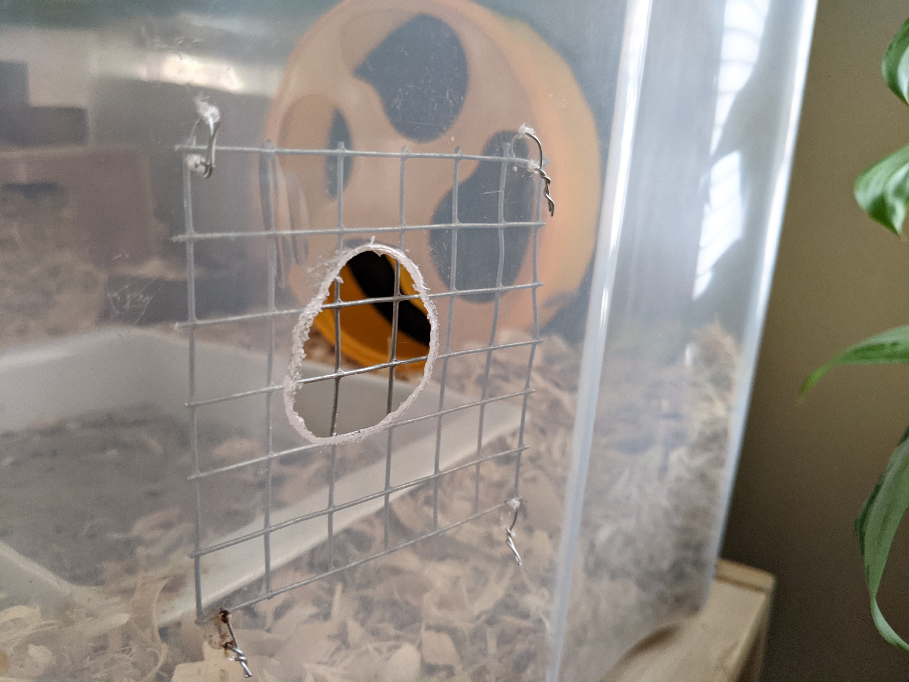

Meet Tony The Hamster

In March of 2020 I decided getting another pet would be a good idea; to keep myself sane though living alone during a pandemic. I've had many hamsters throughout my life, but I never had the personal funds to do right by them- pet store brand cages and food just don't compare to what hamsters are actually supposed to be getting. For only $100 I could let a little bundle of fluff to live in my house like a king, which seemed like a pretty good deal.
Once I finished my cage I set off to find a hamster, which was a lot more work than I expected. I wasn't the only one who had the bright idea of investing in more pets while being forced to work from home, so most places were sold out of hamsters whenever I'd check. Finally I found two for sale- Petsmart Kamloops, no holds. I drove two hours with no promise of actually having a hamster when I showed up, but gods be good there he was. I named him after Scarface's Tony, so he'd grow up tough and brave!

My first picture of Tony
Since he was a chain pet store hamster, Tony started off very skittish. He'd refuse to be held, but never once tried to bite me- a little curious nibble here and there, but he understood that I was never trying to hurt him. Even when I had to grab him like a hacky sack after his escape attempt!
Hamsters are master escape artists- this started off as a hole no bigger than a dime for his water bottle!
These days, Tony is living up to his name and is much braver. He'll let me pick him up with no fuss now, and enjoys a lavish lifestyle of eating treats and sleeping in late. Hamster may not live for long, but they're full of their own personality!